政大企家班NCCU Business Administration · 企業家經營管理研究班
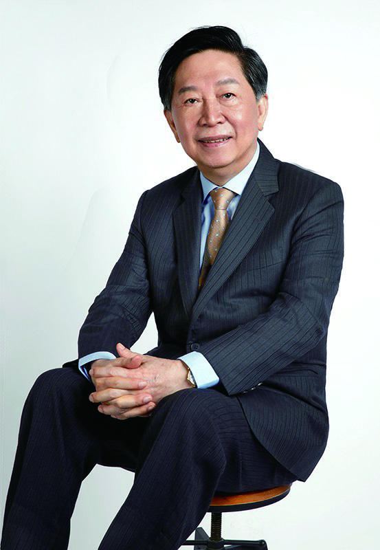
從事國際物流多年的戴治中，以利他共好、創新傳承為核心理念，結合供應鏈、區塊鏈、AI與金融科技的專業背景，帶領企家班進入數位時代。他強調校友的連結不僅是情感，更是一種共創價值的生態系，推動企家大平台與校友捐助計畫，延續前輩精神並開啟新篇章。
為了吸引更多學長姐參與並促進交流，建議演講主題可聚焦於：
避免涉及宗教、政治及過於專業或艱澀的議題。
企家班讀書會正是希望透過這個平台，讓我們在健康的身心與豐盛的智慧之間取得平衡，實現知識文化的交流與傳承。
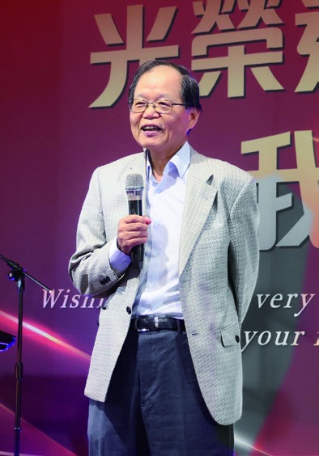
自2024年起，政大企家班校友會便開始規劃並持續推動一系列健康講座，邀請專業醫師及醫藥相關領域的專家與校友，定期一年舉辦一場與大家面對面交流，分享醫療新知與健康觀念。這不僅是一場場的講座，更是學長姐們在學期間與畢業後，彼此關懷、共同成長的重要平台，講座內容廣泛而深入，從生活保健涵蓋多面向的健康主題，進入到身心靈的平衡。
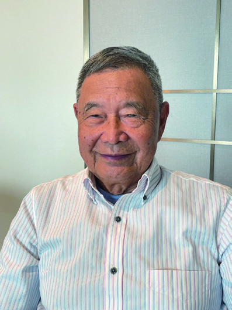
健康講座的價值，不僅在於專業知識的傳遞，更在於校友之間的情感連結。政大企家班的校友們，來自不同世代與產業，但每一次的聚會，都因「健康」這個共同目標而凝聚在一起。許多學長姐分享，平日工作繁忙，鮮少有機會深入接觸醫療專業，透過這樣的平台，不僅能獲得實用知識，也能彼此提醒與鼓勵，讓健康真正成為行動。
此外，講座前的餐敘，讓學長姐們與老師在輕鬆氛圍中交流近況，延續了企家班一貫的「學習＋友情」文化。這種融合了學術性、實用性與人情味的聚會模式，使健康講座成為校友社群中最受歡迎的固定活動之一。
回顧過去幾場講座，主題涵蓋癌症防治、身心靈平衡、臨床新知與生活保健，每一次都得到熱烈回響。展望未來，企家班校友會將持續定期邀請醫界專家，針對不同年齡層與需求規劃多元健康主題，例如：
政大企家班健康講座，不只是一次又一次的聚會，而是一段段共同學習、互相扶持的旅程。透過專業醫師的分享，校友們獲得了守護健康的關鍵觀念；透過校友間的交流，大家又彼此提醒與支持。「健康是人生最大的財富，而這個聚會，就是提醒我們不忘為自己與家人存下最重要的本錢。」
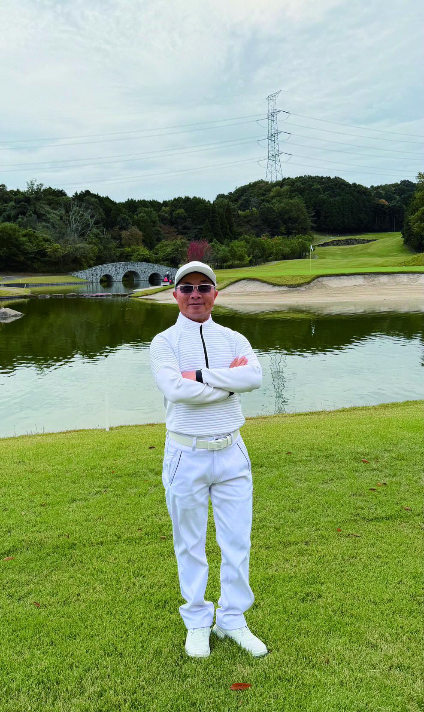
企家班致力於結合理論與實務的進修教育，學員多為創業家、企業二代與高階主管，重視專業學習之餘，也格外看重人脈連結。每個學年僅設一班，為了讓在校新生與歷屆優秀校友能夠有交流的機會，校友會發展出以球會友、跨屆交流的重要媒介，以高爾夫做為聚會重心。
每年舉辦春、夏、秋、冬四季賽及「鐵人杯」等專屬賽事，更進一步發展出班級年度對抗賽（PK賽）。為鼓勵各屆學長姐積極參與，司徒老師更自掏腰包對於出席人數達標的屆別給予獎勵。日常例賽由師徒隊、妖怪隊、快樂隊與在校聯盟四大隊分別籌辦，每月的前四周週末依序舉辦。球隊的會長由在校最後一年之班級輪值擔任三年，負責球隊會務的經營發展。
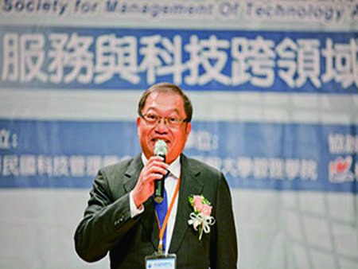
旨在透過高爾夫運動深化師徒情誼，並推動全人教育理念。核心精神為「傳承與共榮」——師長們親授經驗與技巧，不僅協助學生提升球技，更傳遞職涯發展、人生智慧與人際禮儀的寶貴知識。
球隊定期舉辦球敘、教學訓練與友誼賽，積極參與校內外賽事，以賽代訓，增進球員實戰經驗與團隊合作精神。鼓勵成員在球場內外建立真誠友誼，期盼更多同學認識這項優雅且富挑戰性的運動，體悟耐心、策略與禮儀的重要性。
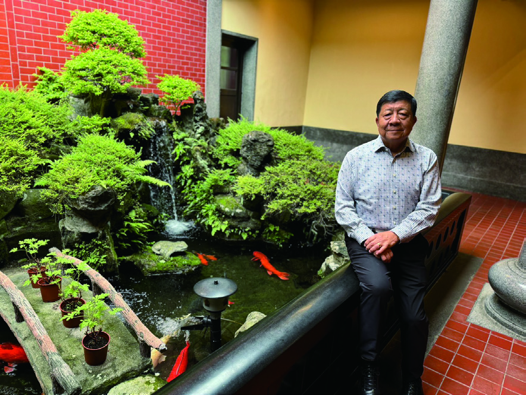
名稱源於第17屆王震華學長捐出一張廣達股票作為球隊基金，「17」在軍中發音為「么拐」，取諧音而得名。呂國雄學長為第一任會長，目前已傳承至第28屆。
妖怪隊約定每月第一個禮拜天，無論風雨晴陰皆會現身球場。「不在於多強，而在於從不缺席；不為了贏誰，而是為了不忘自己。」見證的不只是球技的成長，更是一段段兄弟情誼的深厚沉澱。
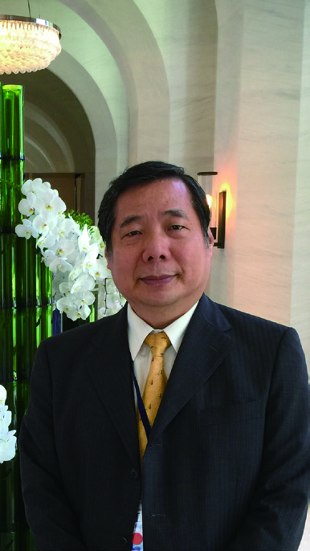
民國94年秋，司徒老師把「學習」與「運動」的種子灑下。第25、26屆學長姐在相互激盪中共同誕生了「快樂隊」，「快樂打球有益健康」成為不變的信條，每月第二個星期日的例賽如同一種儀式。
多年後，快樂隊被列為政大企家班四大球隊之一，近期更連續超過兩年半的週日都遇上晴空萬里。快樂隊承載了友情、榮耀與無數奇蹟，每一次揮桿都是與天地對話。
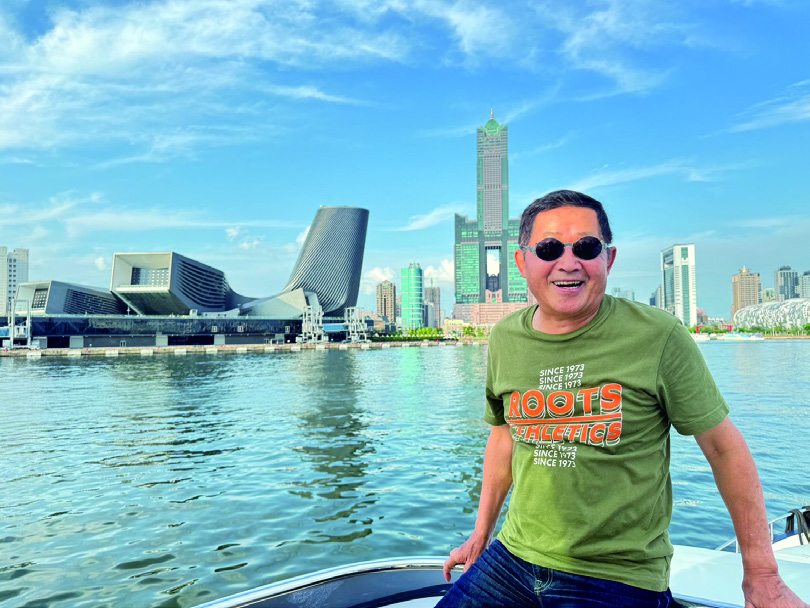
創立目的是讓在校生有聯誼與練習高爾夫的平台，由第30屆汪群凱擔任第一屆會長，讓在校生更積極參與跨屆活動，也能與歷屆校友深入交流。
賽事中常見老師、資深校友與在校學員混組出賽，新生入學後，司徒老師更親自邀請同學同場PK，讓班級間產生強烈凝聚力與自我挑戰精神，在運動中學習、在交流中成長。
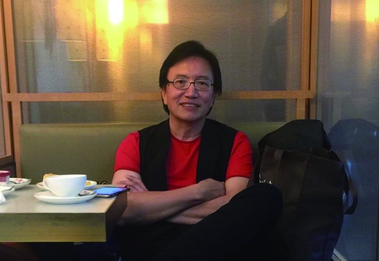
在政大企家班這個鑽石磨鑽石的大家庭裡，企業家精神不僅在課堂中流轉，也在人與人之間的對話中延續。iBowl的誕生，要從創會會長第28屆陳政鴻學長說起——某次課後把酒言歡，凝聚了企業家二代當惺惺相惜、一起把鐵飯碗磨亮成金飯碗的共識，進而鐵飯碗便成為iBowl命名的靈感來源——「Iron Bowl」的諧音iBowl，演繹了企業二代承接家業的責任，同時象徵企業家二代不只是繼承者，更是開創者、學習者與陪伴者。
iBowl的成員來自政大企家班不同屆別，包含正在接班、已承接家業、甚至創業再闖天下的二代、三代們，涵蓋製造業、建設、不動產、食品、科技與服務業各行各業，各個在家族企業中肩負重任，卻在iBowl裡找到放下「身份」後最真實的連結與對話。
每次聚會，都是企業家精神的「雞湯研討會」——有人分享經營心得，有人傾吐接班甘苦，有人帶著新創的火花尋求合作，也有人默默貢獻資源、成為其他人轉型的推手。
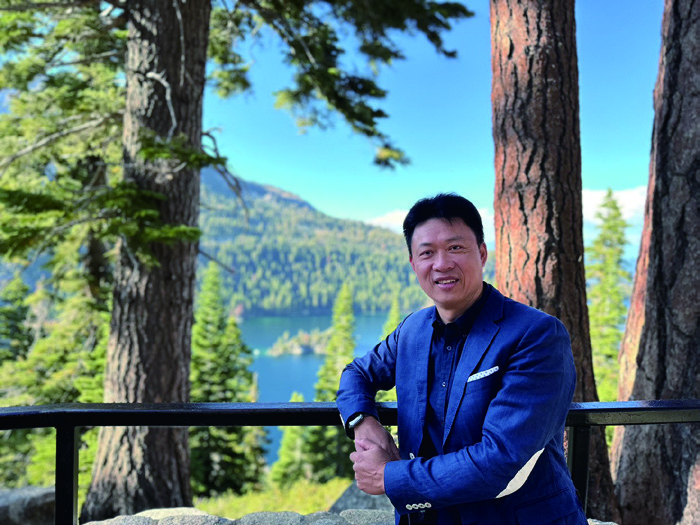
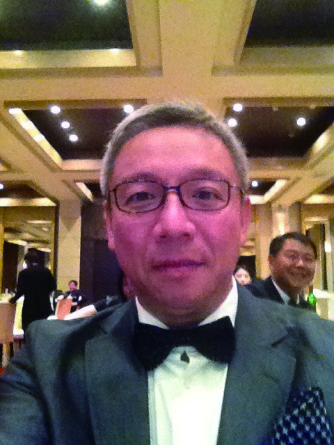
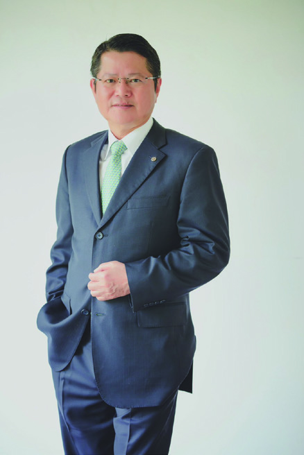
iBowl的核心宗旨很簡單但不容易——讓二代之路不再孤單，讓接班成為一種選擇而非命運，讓下一代在愛與理解中被培養成未來的企業家。現任第36屆吳奕成會長持續強化跨屆聯繫、擴展外部學習資源，讓iBowl不只是個「好聚會」，更是資源交換與共創的平台。
未來，iBowl不僅期待持續陪伴每位二代走過轉型、交接與創業的挑戰，更希望成為一個能夠「培育優質下一代」的搖籃。這個「鐵飯碗」的故事，是關於一群願意學習的人——用行動證明，在傳承的路上，只要彼此相挺、互相切磋，就能把燙手的鐵飯碗幻化成富有希望與韌性的金飯碗。
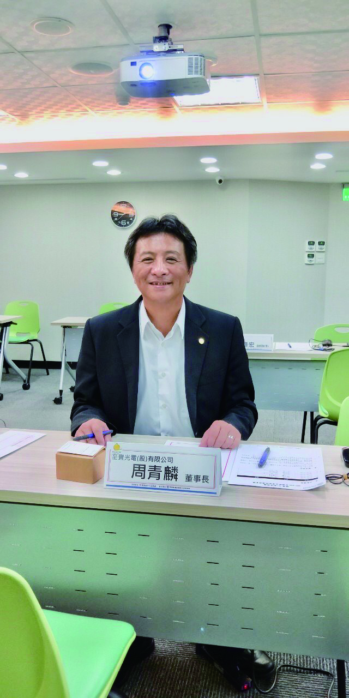
目前家長聯誼會成員近百人，幾乎涵蓋了食、衣、住、行各行各業，會長由選舉產生。
歷任會長所屬企業涵蓋：桂冠、信昌、光泉、弘憶、合隆、科林等知名企業領導人。
每年定期舉辦兩次活動，近年曾與iBowl合辦傳承個案研討會，由司徒達賢教授、彭朱如老師主持，以天下雜誌精選個案「二代該爭還是該忍？」進行討論。2024年邀請方燕玲學姐分享「家族財富傳承以信託與股權規劃為中心之相關議題」，也曾舉辦企業參訪，參觀濰視眼科、光泉集團等。
經過十多組案例（父子、父女、母子檔）的分享，以及司徒老師的啟發指導，我們發現：
企家班家長聯誼會的運作模式極其獨特，在台灣甚至全球知名大學商學院都未見過這樣的組織。華人的傳承接班課題與西方不同，格外受人注目與重視——歡迎對此有興趣的學長姐加入家長聯誼會！